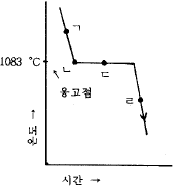
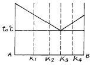
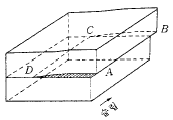
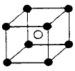
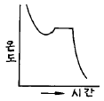
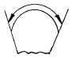
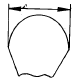
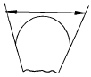
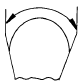

주조산업기사 (2004-05-23 기출문제)
1과목: 금속재료
1. 탄성구역에서의 변형은 세로방향에 연신이 생기면 가로방향에는 수축이 생기고 각 방향의 치수변화의 비는 그 재료의 고유한 값을 나타내는 것은?
- 영률
- 탄성률
- 포아손 비
- 탄성비
(정답률: 알수없음)

2. 다음 중 초경 탄화물이 아닌 것은?
- WC
- GC
- TiC
- TaC
(정답률: 알수없음)
3. 실용금속의 결정격자 중 대표적인 것이 아닌 것은?
- 능방격자
- 면심입방격자
- 체심입방격자
- 조밀육방격자
(정답률: 알수없음)
4. 다이캐스팅 합금의 요구조건이 아닌 것은?
- 유동성이 나쁠 것
- 열간취성이 적을 것
- 금형에 접착되지 않을 것
- 응고수축에 대한 용탕 보급이 좋을 것
(정답률: 알수없음)
5. 강과 주철을 구분하는 탄소의 함유량(%)은 약 어느정도인가?
- 0.4
- 0.8
- 1.2
- 2.0
(정답률: 알수없음)
6. 원자로용 합금 및 신금속은?
- 우라늄, 게르마늄
- 티탄, 텅스텐
- 구리, 코발트
- 붕소, 알루미늄
(정답률: 알수없음)
7. 가공된 금속을 재가열할 때의 성질 및 조직변화의 순서가 맞는 것은?
- 내부응력의 제거→ 연화→ 재결정→ 결정입자의 성장
- 연화→ 내부응력의 제거→ 결정입자의 성장→ 재 결정
- 내부응력의 제거→ 재결정→ 연화→ 결정입자의 성장
- 연화→ 결정입자의 성장→ 내부응력의 제거→ 재 결정
(정답률: 알수없음)
8. 강의 원소 중 결정입자를 조절할 수 있고 내식성의 개선을 위해 첨가되는 원소는?
- Pb
- Cu
- Ti
- S
(정답률: 알수없음)
9. 탄소강이 가지는 메짐(shortness)에 대한 설명 중 옳지 않은 것은 ?
- 200-300℃에서 깨지기 쉬운 성질을 청열메짐이라고 한다.
- 황을 많이 함유할 경우 950℃ 전후에서 적열메짐이 나타난다.
- 인을 많이 함유할 경우 상온 이하의 온도에서 저온메짐이 나타난다.
- 탄소를 함유한 경우 질화메짐이 나타난다.
(정답률: 알수없음)
10. 소결 전기재료의 전기 접점 부품이 갖추어야 할 성질 중 틀린 것은?
- 접촉저항이 작아야 한다.
- 고유저항이 작아야 한다.
- 열전도율이 작아야 한다.
- 비중이 작아야 한다.
(정답률: 알수없음)
11. 구리의 성질을 설명한 것 중 틀린 것은?
- 전기 및 열의 전도성이 우수하다.
- 전연성이 좋아 가공하기가 쉽다.
- 화학 저항력이 커서 부식에 강하다.
- Zn, Sn, Ni 등과는 합금이 잘 안된다.
(정답률: 알수없음)
12. 금속의 전도도에 관한 설명 중 틀린 것은?
- 물질의 전기저항은 길이에 비례 한다.
- 합금이 순금속 보다 전기전도도가 좋다.
- 열전도도가 좋은 금속은 전기전도도가 좋다.
- 고체의 열전도도는 전자와 격자진동에 의한다.
(정답률: 알수없음)
13. Al-Cu-Mg 계 합금으로 항공기용 신소재는?
- KSL
- ESD
- DPP
- POM
(정답률: 알수없음)
14. 활자합금이 갖추어야할 조건으로 틀린 것은?
- 용융점이 높을 것
- 미세부분의 주조가 가능할 것
- 적당한 강도와 내식성을 가질 것
- 가격이 쌀 것
(정답률: 알수없음)
15. 화이트메탈(white metal)의 주성분이 아닌 것은?
- 납(Pb)
- 주석(Sn)
- 아연(Zn)
- 철(Fe)
(정답률: 알수없음)
16. 반도체의 재료 중 열전 변환 재료(발열재료)의 성분으로 맞는 것은?
- MgO
- FeS
- CuO
- SiC
(정답률: 알수없음)
17. 면심입방격자 (FCC)의 단위격자 소속 원자수와 원자의 충전율을 바르게 짝지은 것은?
- 단위격자 소속 원자수: 4, 충전율: 74%
- 단위격자 소속 원자수: 6, 충전율: 65%
- 단위격자 소속 원자수: 3, 충전율: 82%
- 단위격자 소속 원자수: 8, 충전율: 54%
(정답률: 알수없음)
18. 청동의 일종인 켈밋(kelmet)이 주로 사용되는 용도는?
- 탈산제
- 피복첨가물
- 베어링
- 내화제
(정답률: 알수없음)
19. 다음 중 불변강에 속하지 않는 것은?
- 엘린바(Elinvar)
- 인코넬(Inconel)
- 플래티나이트(Platinite)
- 코엘린바(Coelinvar)
(정답률: 알수없음)
20. 다음 그림은 순구리의 냉각곡선을 나타낸 것이다. 용융 Cu 로부터 고체 Cu 의 핵이 생성되는 곳은?

- ㄱ
- ㄴ
- ㄷ
- ㄹ
(정답률: 알수없음)
2과목: 금속조직
21. 그림과 같은 공정형 상태도를 갖는 합금이 융액 상태로부터 냉각되어 온도 to ℃ 에 도달하였을 때 이 온도에서 공정정체 시간이 가장 긴 합금의 조성은?

- k1
- k2
- k3
- k4
(정답률: 알수없음)
22. 장범위 규칙도(degree of long order)가 1인 합금은?
- 완전규칙 고용체이다.
- 완전불규칙 고용체이다.
- 불완전규칙 고용체이다.
- 불완전불규칙 고용체이다.
(정답률: 알수없음)
23. 격자상수 a, b, c 및 α, β, γ 사이에 a=b≠c, α=β=γ=90° 인 결정계에 해당되는 것은?
- 입방정
- 정방정
- 사방정
- 3방정
(정답률: 알수없음)
24. 냉간가공을 받은 금속이 풀림에 의하여 결정립의 모양이나 결정의 방향에 변화를 일으키지 않고 물리적 및 기계적 성질만이 변하는 현상은?
- 재결정(recrystallization)
- 쌍정(twin)
- 결정립성장(growth)
- 회복(recovery)
(정답률: 알수없음)
25. 열분석 장치에 직접적으로 필요한 것이 아닌 것은?
- 교반기
- 열전대
- 발열체
- 전기로
(정답률: 알수없음)
26. 그림과 같은 원자 배열의 형식은?

- 수직전위
- 나사전위
- 전단전위
- 원형전위
(정답률: 알수없음)
27. 그림과 같은 규칙격자는 어느 형에 속하는가? (단, A:○, B:●)

- AB
- A2B
- AB2
- AB3
(정답률: 알수없음)
28. 금속의 소성변형을 가능하게하는 전위는 어떤 결함인가?
- 수축결함
- 선결함
- 기포결함
- 자기결함
(정답률: 알수없음)
29. 자기변태점이 없는 금속은?
- Fe
- Ni
- Co
- Aℓ
(정답률: 알수없음)
30. 그림과 같이 순금속을 용융상태에서 부터 냉각시킬 때 용융점 보다 낮은 온도에서 응고되는 현상은?

- 재융해
- 재응고
- 과냉각
- 단결정
(정답률: 알수없음)
31. 격자 결함의 종류에 속하지 않는 것은?
- 공격자점(Vacancy)
- 격자간 원자(Interstitial atom)
- 전위(Dislocation)
- 확산(Diffusion)
(정답률: 알수없음)
32. 강의 마텐자이트(martensite)의 설명이 옳은 것은?
- 탄소의 확산으로 된 조직이다.
- 무확산 변태이다.
- 페라이트와 펄라이트의 혼합조직이다.
- 페라이트와 시멘타이트의 혼합조직이다.
(정답률: 알수없음)
33. 열분석 곡선의 측정과 관련이 없는 것은?
- 열팽창
- 전해연마
- 비열
- 전기저항
(정답률: 알수없음)
34. BCC 금속의 슬립방향은?
- [111]
- [110]
- [010]
- [011]
(정답률: 알수없음)
35. 불활성 가스 원자의 결합형식은?
- 결정결합
- 공유결합
- 금속결합
- 구조결합
(정답률: 알수없음)
36. 재결정과 관련된 내용의 설명 중 틀린 것은?
- 냉간가공으로 변형을 일으킨 금속을 가열하면 그 내부에 결정립의 핵이 생긴다.
- 새로운 결정립의 핵생성과 성장의 과정이다.
- 재결정이 일어나는 온도를 재결정온도라고 한다.
- 저온도의 풀림에서는 회복없이도 재결정이 일어난다.
(정답률: 알수없음)
37. 0.0075℃, 0.006 기압(4.58 mmHg 압력)에서 물은 어떻게 존재하는가?
- 기상, 액상의 2중점
- 기상, 액상의 고용 2중점
- 기상, 고상의 평형상태
- 고상, 액상, 기상의 3중점
(정답률: 알수없음)
38. 용융체+α 고용체→ β 고용체의 반응식은?
- 공정반응
- 편정반응
- 포정반응
- 편석반응
(정답률: 알수없음)
39. Free Cutting Brass 의 올바른 뜻은?
- 인청동
- 강인강
- 쾌삭황동
- 수인강
(정답률: 알수없음)
40. ABC 3금속을 합금시켰을 때 이 합금의 t1온도에서 금속간 화합물(A3C)과 고용체 α가 공존하고 있었다면 이 온도에서 응축계의 자유도는?
- 0
- 1
- 2
- 3
(정답률: 알수없음)
3과목: 일반주조
41. 기계조형을 손 조형과 비교하여 설명 한 것중 틀린 것은?
- 생산능률이 높다.
- 불량률이 높다.
- 제품이 균등하다.
- 기계가공 시간이 단축된다.
(정답률: 알수없음)
42. 기어, 벨트풀리, 차바퀴 등의 제작용 원형에 가장 적합한 것은?
- 잔형
- 회전형
- 매치플레이트
- 긁기형
(정답률: 알수없음)
43. 가스빼기와 슬랙을 밖으로 제거하는 역할을 하는 것은?
- 냉금(Chill)
- 압탕(Riser)
- 플로우 오프(flow off)
- 결속봉(tie bar)
(정답률: 알수없음)
44. 주물의 각 부분에서 화학조성이 불균일한 편석은?
- 대역편석
- 입내편석
- 비중편석
- 합금편석
(정답률: 알수없음)
45. 주탕 불량(misrun)발생의 가장 큰 원인은?
- 용탕의 유동성이 나쁘며 주입온도가 낮고 주입속도가 느릴 때
- 용탕의 유동성이 나쁘며 주입온도가 높고 주입속도가 빠를 때
- 용탕의 유동성은 좋으나 주입온도가 높고 주입속도가 느릴 때
- 용탕의 유동성은 좋으나 주입온도가 낮고 주입속도가 빠를 때
(정답률: 알수없음)
46. 고속회전하는 임펠러(Impeller)의 강철입자를 이용한 주물표면의 탈사기는?
- 펀치아웃머신(Punch-out machine)
- 세이크아웃머신(Shake-out machine)
- 녹아웃머신(Knock-out machine)
- 쇼트블라스트(Shot blast)
(정답률: 알수없음)
47. 큐폴라 용해시 구상흑연 주철의 슬래그(slag)의 염기도식으로 맞는 것은?
- [CaO(%)+MgO(%)]/SiO2(%)
- [CaO(%)+SiO2(%)]/MgO
- MgO(%)/[CaO(%)+SiO2(%)]
- CaO(%)/[MgO(%)+SiO2(%)]
(정답률: 알수없음)
48. 목재로 만든 원형의 표기로 맞는 것은?
- 우드 패턴(Wooden pattern)
- 메탈 패턴(Metal pattern)
- 풀 패턴(Full pattern)
- 스켈르톤 패턴(Skeleton pattern)
(정답률: 알수없음)
49. 주물사의 충전과 다지기가 동시에 이루어지는 능률적인 조형기계는?
- 혼합 조형기
- 샌드 슬링거
- 스퀴즈식 조형기
- 조울트식 조형기
(정답률: 알수없음)
50. 주물의 제작공정으로 맞는 것은?
- 원형제작-주형제작-용해-주입-후처리
- 주형제작-용해-주입-원형제작-후처리
- 용해-주입-주형제작-원형제작-후처리
- 주입-용해-원형제작-주형제작-후처리
(정답률: 알수없음)
51. 최근 많이 사용되는 원형 재료로서 변형도 없고 값이 싸고 가벼우며 장기간 보존할 수 있는 원형은?
- 목형
- 금형
- 점토형
- 합성수지형
(정답률: 알수없음)
52. 건조된 주물사 시료 50g 을 점토분시험하여 분리한 후 42g 이 남아 있을 때 이 시료의 점토분(%)은?
- 15
- 16
- 17
- 18
(정답률: 알수없음)
53. 치수기입에서 현에 대한 치수기입 법으로 옳은 것은?




(정답률: 알수없음)
54. 주형과 용탕이 접촉하는 부분에 바르는 도형제의 사용도구로 적당한 것은?
- Ferro grit
- Spray gun
- Sand blow
- Skimmer bar
(정답률: 알수없음)
55. 특수원형에서 상, 하형 양쪽원형이 분리선을 구성하는 평판의 양쪽에 바로 교착되는 곳에 장치한 것은?
- 매치플레이트
- 패턴플레이트
- 마스터패턴
- 골격패턴
(정답률: 알수없음)
56. 주형과 용탕간의 반응에 의해 주물사가 주물표면에 융착되어 표면이 거칠어 지는 현상은?
- 파임(Scab)
- 꾸김(Backle)
- 용탕경계(Cold shut)
- 소착(Sandburning)
(정답률: 알수없음)
57. 주조품의 내부 결함측정을 위한 비파괴 검사법은?
- 파면검사법
- 현미경검사법
- 초음파검사법
- 인장시험법
(정답률: 알수없음)
58. 무철심 유도로의 특징으로 옳은 것은?
- 효율이 아주 높다.
- 용탕조성의 조정이 신속하다.
- 조업시간이 길다.
- 성분조성이 어렵다.
(정답률: 알수없음)
59. CAD시스템 출력장치가 아닌 것은?
- CRT
- Plotter
- Joystick
- Printer
(정답률: 알수없음)
60. 점토의 노화온도는?
- 200 ℃
- 350 ℃
- 450 ℃
- 600 ℃
(정답률: 알수없음)
4과목: 특수주조
61. 주입구 단면적이 260cm2가 2개이고 탕구 단면적이 650cm2, 탕도 단면적이 585cm2일 경우 탕구비는?
- 1.0 : 2.0 : 1.0
- 1.0 : 0.9 : 0.8
- 1.0 : 0.8 : 0.3
- 1.0 : 3.0 : 3.0
(정답률: 알수없음)
62. 인베스트먼트 주조에 사용되는 점결제의 구비조건이 아닌 것은?
- 왁스를 용해시키면 안된다.
- 내화물입자를 서로 단단히 결합시킬 수 있어야한다.
- 주입금속과 반응을 일으켜야 한다.
- 내화물과 반응하여 저융점의 공정 물질을 생성시켜서는 안된다.
(정답률: 알수없음)
63. 후란 주형법에서 신사의 구비조건에 해당되는 것이 아닌 것은?
- 규사의 입도가 균일하며 미분이나 점토분이 적을 것
- 입형은 구형에 가깝고 표면은 평활할 것
- 규사의 수분함유량이 적을 것
- pH 가 강알칼리성에 가까울 것
(정답률: 알수없음)
64. 석고 주형법에서 통기성을 향상시키기 위해 첨가하는 재료는?
- 계면활성제
- 활석
- 석회
- 규사
(정답률: 알수없음)
65. CO2 주형법의 장점이 아닌 것은?
- 주형건조가 불필요해서 조형속도가 빠르다.
- 코어의 보강재와 심금 등을 생략할 수 있다.
- 모래의 유동성이 좋기 때문에 조형에너지가 적게 된다.
- 주형면이 좋아 도형이 필요없다.
(정답률: 알수없음)
66. 다음 중 CO2 주형에서 사용하는 주 점결제는?
- 물유리
- 벤토나이트
- 우레탄수지
- 페놀수지
(정답률: 알수없음)
67. 자경성주형법 중 발열자경성주형법이 아닌 것은?
- N법(N process)
- H.T.법(H.T. process)
- H법(H process)
- FS법
(정답률: 알수없음)
68. 열가압실식 다이캐스트법에서 주조개시 할 때 주의 해야할 점으로 옳지 않은 것은?
- 용탕온도를 높게한다.
- 노즐을 약간 높게 가열한다.
- 고정형에는 구석구석 이형제를 도포한다.
- 플런저타이머와 금형타이머를 길게 설정한다.
(정답률: 알수없음)
69. CO2 주형제작에 사용하는 점결제는?
- CaCO3
- Al2O3
- MgO
- Na2⋅SiO3
(정답률: 알수없음)
70. 인베스트먼트 주조품을 주조할 때 가장 적당한 주입구의 위치는?
- 주조품이 제일 먼저 응고하는 위치
- 주조품이 가장 늦게 응고하는 위치
- 위 두가지 조건에 관계없는 중간 위치
- 주조품의 곡면 부
(정답률: 알수없음)
71. 쉘몰드 주형제작시 모래의 자유낙하를 이용한 방식은?
- 덤프 방식
- 스토핑 방식
- 부력 방식
- 비중량 방식
(정답률: 알수없음)
72. 다음 중 자경성 주형법이 아닌 것은?
- 펩세트(pep set)주형
- 푸란(furan)주형
- 다이칼(dical)주형
- 쇼(shaw)주형
(정답률: 알수없음)
73. 정밀주조법인 로스트왁스법(lost wax)에서 슬러리로 가장 널리 쓰이는 내화물 재료는?
- 마그네슘산화물
- 지르코늄산화물
- 알미늄산화물
- 실리콘산화물
(정답률: 알수없음)
74. 주물의 품질검사에서 비파괴검사법이 아닌 것은?
- 방사선 투과검사
- 화학 성분 검사
- 초음파 탐상검사
- 전자기 탐상검사
(정답률: 알수없음)
75. 다이캐스팅에 관한 설명 중 틀린 것은?
- 복잡한 모양의 주물의 제조가 가능하다.
- 얇은 주물의 생산이 가능하다.
- 주물의 표면이 금형에 접하게 되므로 깨끗하고 곱다.
- 금형비도 저렴하고 소량생산에 적합하다.
(정답률: 알수없음)
76. 인베스트먼트 주조법에서 금형의 제작시 주의할 점과 관련이 가장 적은 것은?
- 표면 다듬질
- 치수 정밀도
- 금형의 색깔
- 수축율
(정답률: 알수없음)
77. 주물에 기공이 발생하는 것을 억제시키기 위한 대책으로 가장 적합한 것은?
- 주탕컵 설치
- 진행성 응고
- 탕도 설치
- 주물사의 통기도 향상
(정답률: 알수없음)
78. 쉘몰드법으로 탄소강 주강품을 제조할 때 잘못 설명한 것은?
- 주형의 균열, 소착 또는 주물표면의 개선을 위하여 올리빈사, 지르콘사 크로마이트사 또는 그것들의 혼합물을 사용해서는 안된다.
- 주입중량 30kg 이상, 최대살두께 20mm 이상일 때는 쉘몰드를 백업하는 것이 좋다.
- 용해작업시 환원기말에 충분하게 탈산해야 된다.
- 주형에서 발생하는 가스는 방산하지 않고 한군데로 모아서 처리하는 것이 환경위생상 좋다.
(정답률: 알수없음)
79. 저압주조법에서 용탕은 주형속에 어떻게 주입하는가?
- 급탕관을 통하여 옆에서 주입된다.
- 위에서 아래로 떨어져 주입된다.
- 밑에서 급탕관을 통하여 올린다.
- 수평 급탕관으로 흘러 들어간다.
(정답률: 알수없음)
80. 쉘몰드법의 습윤제로 적당하지 않은 것은?
- 등유
- 푸루푸랄
- 글리세린
- 실리콘유
(정답률: 알수없음)